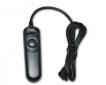

无忌
器材库
全部器材
产品年表
名词百科
榜单
器材库
> 快门控制 > RC-201有线快门线

品色
RC-201有线快门线
分类
快门控制
点评
0 条
图片
0 张
评测
0 篇
RC-201使用了高级的表面拉丝纹处理，增加质感；快门控制：半按或全按；兼容相机：佳能、尼康、索尼、宾得、三星、松下、徕卡等单反照相机。
产品类型
快门控制
综合评分
暂无评分
无忌评测
暂无评测
规格参数
网友点评
(0)
产品图 / 样片
(0)
评测文章
(0)
详细规格
厂家推荐价格
50.00 （人民币）
类型
线缆式快门遥控开关
释放
对焦和拍摄两档按钮，锁定按钮可以连续拍摄和长时间曝光
控制线长
110cm
拍摄模式
单拍、连拍、长时间曝光
尺寸
95.5×29.4×20.3mm
重量
55g
附件
产品说明书1份、保修卡1份
该产品暂无存档的网友点评
该产品暂无存档的产品图
评测 / 相关文章
该产品暂无存档的评测文章
相关文章
［试用］我的XE1及他的小伙伴们
（存档）